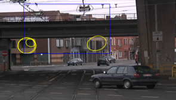

Noise: breaks up straight tracks in several disconnected lines
Note: OpenCV's Hough transform does have a parameter to allow gaps, but that does increase the noise enormously.
Track detection
Stitching segments
How?
Find connected segments: endpoints close, slope difference not too big
Frame after stitching the group representatives.
Track detection
Track start detection
Vertical scanline: check intersections
Validity checks: location (somewhere the middle), space between, track slope, ...
Detection of the track start.
Result
Speed: fast, ~10 ms (100 FPS) for 720p images
Quality: quite good, but not ultimately reliable
Problems: extremely low contrast, curved tracks
Final result of the track detection, coping well with a low-contrast high-noise input.
Tram detection
Subtitle
Content slides
Blabla.
Distance calculation
Alternatives
Builtin OpenCV methods
cv::findHomography
cv::projectPoints
cv::warpPerspective
Missing lots of camera information
Mathematical Solution
Method
Step 1: Distance X-axis
Step 2: Distance Y-axis
Step 3: Total Distance
Distance X-axis
Detected positions
Determine the middles
Calculate difference X
Convert pixel to real distance
Distance X-axis
Distance Y-axis
Detected positions
Calucate difference Y
Calculate ratio
Calculate ratio^3
Distance Y-axis
Total Distance
20 m
10 m
5 m
Obstacle detection
Obstacle detection
Pedestrians
Vehicles
Animals
Debrie
...
Pedestrian detection
Template matching no templates for people
Contours what about groups?
Haar like features uses real features
Boosted cascade of Haar-like features
Samples are created createsamples (OpenCV)
Feature selection by extensive training
AdaBoost to select a small set of features haartraining (OpenCV)
Detection with sliding window
Pedestrian detection - Results
Speed: slow, 900 ms (1 FPS) for 720p images
Solution:
scaling down image: 250 ms
reducing ROI: 120 ms (9 FPS)
Quality: good, few false positives & negatives
Final result of the pedestrian detection
Vehicle detection
Template matching too much vehicle types
Haar like features no generic features for all types of vehicles
Texture matching low quality of images
Contours too much vehicle types
Detecting wheels
Wheel detection
Detecting ellipses
RANSAC: poor success rate
cv::findContours() + cv::fitEllipse()
extra validations
Detect car from wheels
Overlapping ellipses are merged
Two closest ellipses are grouped
Vehicles are calculated or rejected
Vehicle detection - Results
Speed: fast, 10 ms for 720p images
Quality: ok, no detection for vehicles with more then four wheels, not all cars are detected due to poor quality in images, nonexistant vehicles found due to noise in the picture

Final result of the vehicle detection
Final application
Performance and intuitiveness
Features
Qt-based UI: user-friendly and native interface
OpenGL: improved drawing performance
OpenMP: independant parts of the components are executed in parallel
Feature cache: if one component fails, others continue to work with previous data (until it expires)